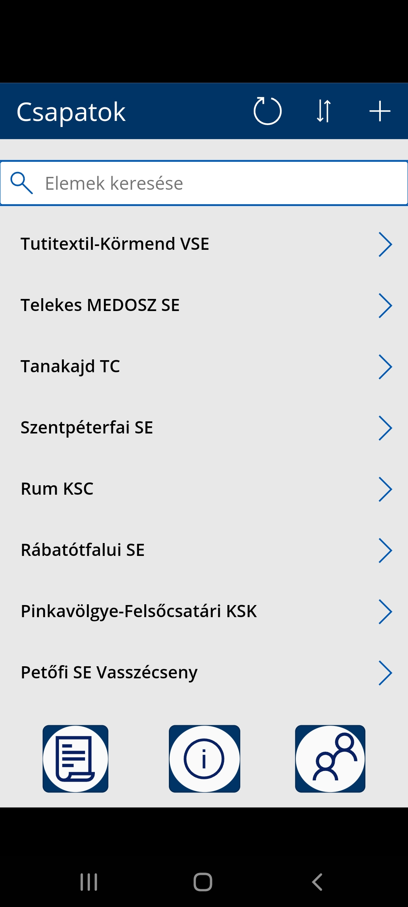
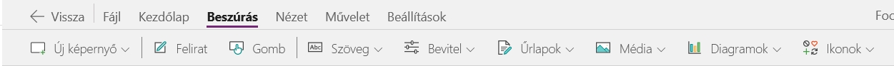

Ötlet két kiindulási pontja az első: MlSZ adatbank weboldal. Ahol a magyar fociról sok minden megtalálható: válogatott játékosok, jegyek, webshop szövetség, fejlesztések számomra a lényeges része a meccscenter. Ahol egy adott bajnokságról vannak adatok: aktuális szezon szervezője például Vas, Somogy, Pest, Bács-Kiskun, Baranya, Békés, Borsod-Abaúj Zemplén, Budapest, Csongrád, Fejér, Győr-Moson-Sopron, Hajdú-Bihar, Jász-Nagykun-Szolnok, Komárom-Esztergom, Nógrád
Második: eredmények mobil alkalmazás vagy az eredmények.com weboldal, ahol mindenféle sport elérhető például jégkorong, tenisz, kosárlabda, kézilabda, röplabda, darts, amerikai futball, asztali tenisz, baseball, box, eSport, florball, futsal, golf, gyephoki, kerékpár, krikett, ligarögbi, lóverseny, MMA, motorsport, Netball, rögbi, strandfoci, strandröplabda, tollaslabda, vízilabda, illetve foci.
Az eredményeken focis felületem az OTP Bank Liga NBI. Merkantil Liga NB II. NBIII. keleti csoport NBIII. közép csoport NBIII. nyugati csoport MOL Magyar Kupa Amatőr kupa Simple Női Liga NBI. Női NB II. Keleti csoport Női NBII. Nyugati csoport Simple Női kupa stb. érhető el, de a megyei bajnokságok nem elérhetőek itt.
Az MLSZ adatbankban elérhetőek a megyei bajnokságok, de az eredmények alkalmazásban csak NBIII-ig nézhető meg.
Feladat megvalósítása arra irányul, hogy egy olyan alkalmazás fejlesztése, ami a megyei csapatokra koncentrál, illetve adott egyesületekre, ahol az egyesület maga tudja kezelni, létrehozni, szerkeszteni, adatait és kimutatásokat statisztikát létrehozni.
Az itt bemutatott munka az eddig elkészült megoldások részei, mely jelenleg több környezetből áll egyrészt egy modell vezérelt alkalmazás, amely főként csapatokról fordulókról játékosokról táról adatott, valamint power Bi jelentést lehet hozzáadni.
Másrészt egy vászon alapú mobilos alkalmazás, amelyen csapatokról és játékosokról találunk információikat van lehetőség csapatokat szerkeszteni, hozzáadni vagy törölni.
Harmadrészt power Bi irányítópult jelentések, amik főként keresésnél adnak szűrési lehetőségeket. Lehetőség van az első kettő alkalmazás adat táblái között kapcsolatot létrehozni.
MLSZ adatbankba nagyon sok adat szerepel és a megyei meccseket csak később teszik fel és aki esetleg nem járatos benne könnyen eltéved az oldal rengeteg adat tábláiban.
Amelyik oldalon szükséges ott keresési lehetőség megadása
Csapatok szerkeszthetősége
Készüljenek statisztikai adatok
Minden csapatnak legyen egy gól lövő listája
Az alkalmazások könnyen elérhetőek legyenek
Egyszerű feladatok elvégzése
Legyenek elérhetőek mobilon
Amelyiknél lehetséges mobilos nézett létrehozása
Alkalmazások forrása legyen verzió követett
Váltson gyorsan az oldalak között
A Power Apps alkalmazások, szolgáltatások és összekötők gyűjteménye, illetve egy adatplatform, amely gyors alkalmazásfejlesztést és hozzá saját környezetet kínál ahol a mi igényeink szerint hozhatunk létre egyéni alkalmazásokat.
A Power Apps használatával gyorsan lehet létrehozni olyan alkalmazásokat, amelyek csatlakozni tudnak adataihoz akár a mögöttes adatplatformon dataverse, vagy akár különféle online és helyszíni adatforrásban tárolva például Drive, SharePoint, Excel, Office 365, Dynamics 365, SQL Server alapján.
A Power Apps használatával létrehozott alkalmazások előre beállított logikával és munkafolyamatokkal kapcsolatos képességekkel rendelkeznek, amelyekkel manuális üzleti műveleteit egy digitális, automatizált folyamattá alakíthatja át. A Power Apps használatával készült alkalmazások ezen kívül rugalmas kialakítással rendelkeznek, és gördülékenyen futtathatók akár böngészőben, akár mobileszközökön.
A Power Apps a felhasználókra bízza az egyéni alkalmazások létrehozását, hiszen lehetővé teszi számunkra, hogy funkciókban gazdag egyéni alkalmazásokat hozhassunk létre kódírás nélkül.
A Power Apps kiterjeszthető platformot is biztosít ahhoz, hogy programozott módon végezhessünk az adatokon és metaadatokon alkalmazott módosítások szerinti létrehozást és add lehetőséget egyéni összekötők és a külső adatokból való integritás megvalósítására.
Az alkalmazást ugyanúgy megtervezhetjük, mintha egy diát terveznénk a PowerPointban elemek áthúzásával a vászonra. A logika meghatározásához és az adatokkal való munkavégzéshez az Excelben használtakhoz hasonló kifejezéseket hozhatunk létre.
Tervezhettünk és építhetünk egy alkalmazást vászonról anélkül, hogy kódot kéne írnunk egy programozási nyelven.
Minta alkalmazásból, amik kitalált adatokat használnak egy valós életből vett forgatókönyv bemutatására. Mindegyik minta más-más forgatókönyvet jelent különböző vezérlőkkel és képernyőkkel.
Sablonból itt egy sablont használunk fel, amihez szükség van egy felhő alapú tárfiókra.
Excel fájlból, amelynél az alkalmazás egy excel tábla adataira épül. Az excel-fájlnak egy felhő alapú tárfiókban kell lennie egy OneDrive, Google Drive vagy Dropbox fiókban.
SharePoint lista elemei alapján vagy a Power Apps-szolgáltatáson belül létrehozhatunk alkalmazást egy helyszíni SharePoint-webhelyen lévő listából is, ha csatlakozunk ahhoz egy adat átjárón keresztül.
Dataverse rendszeréből a létrehozott alkalmazásban böngészhetünk a fiókok listája között, megjeleníthetünk egy-egy fiók részletes adatait, létrehozhatunk vagy törölhetünk egy fiókot, vagy frissíttethetjük a hozzá tartozó információkat. Az elején létre kell hoznunk egy kapcsolatot a microsoft dataverse rendszerével.
SQL adatbázisból előfeltételei: böngészőben engedélyeznünk kell az előugró ablakokat, Azure előfizetésre van szükség, az sql adatbázisnak legalább egy szöveg adattípusú oszloppal kell rendelkeznie, a tűzfal beállításánál engedélyezni kell az azure sevices hozzáférését az sql kiszolgálóhoz, a meglévő sql adatbázishoz hozzáférést kell biztosítani.
A fentiekből következik, hogy a hat megoldás közül bármelyik választható. A hat lehetőség közül én a harmadikat választottam.
Az Excel egy olyan kapcsolat, amely adatforrássá válik a Power Apps alkalmazáshoz való hozzáadásakor. Az Excel Power Apps alkalmazásból való csatlakoztatásához az alábbi négy lépést hajtottam végre.
1.léppés – Webes tatalomból url cím alapján kinyertem az adatokat.
lépés – Az adatokat megformáztam külön-külön táblázatként az Excelben.
lépés –Az excel fájlokat egy felhőalapú helyen ez esetben a google dirveba tároltam.
lépés – Az excel hozzáadása power app adatforrásként
A modellvezérelt alkalmazástervezés olyan megközelítés, amely az összetevők, például űrlapok, nézetek, diagramok és irányítópultok táblázatokhoz való…hozzáadására összpontosít egy alkalmazástervező eszköz segítségével.
Ezenkívül kapcsolatok összekapcsolja a táblákat oly módon, hogy lehetővé tegye a közöttük való navigációt, és biztosítsa, hogy az adatok ne ismétlődhessenek meg szükségtelenül. Az alkalmazástervezőt kevés vagy semmilyen kód nélküli használatával egyszerű vagy nagyon összetett alkalmazásokat hozhatunk létre.
Bár modellvezérelt alkalmazásoknak nevezik őket, gyakran könnyebb úgy gondolni rájuk, mint adatmodell-vezérelt alkalmazásokra. Ennek az az oka, hogy a beépített adatmodell nélkül Microsoft Dataverse nem hozhat létre modellvezérelt alkalmazást.
· a modell vezérelt alkalmazásokkal a felhasználói felület nagy részét előre meghatározza számunkra a rendszer, és nagyrészt az alkalmazáshoz hozzáadott összetevők jelölik ki.
· >Az alkalmazások hasonló felhasználói felülettel rendelkeznek a különböző eszközökön az asztaltól a mobilig.
· Az adatmodell és a kapcsolatok létrehozása után az építési folyamat viszonylag gyors a gazdag alkatrész-központú kód nélküli tervezőknek köszönhetően.
· A felhasználói élmény konzisztens az összes modell vezérelt alkalmazásban. Ha a felhasználó magabiztos egy modell vezérelt alkalmazással, a későbbi alkalmazásokat könnyebben alkalmazhatja egy szervezeten belül.
· Az alkalmazások fejlesztési, tesztelési és éles környezetek közötti áttelepítése viszonylag egyszerű a megoldások használatával.
· Az alkalmazások automatikusan elérhetők és reagálnak.
· Microsoft Power Apps Engedély.
· Környezet létrehozásának Power Platform képessége. Ez a birtokában lévő Power Apps Dynamics 365 licencek egyik jellemzője.
· Power Platform-környezet.
· Jogosultságok a készítő számára, hogy rendszerszabóként vagy környezetkészítőként működjön abban a környezetben, ahol a modellvezérelt alkalmazás létrejön. További információ: Az előre definiált biztonsági szerepkörökkel kapcsolatos tudnivalók
· Dataverse Adatbázis a környezetben. Ez akkor van kiválasztva, ha környezetet hoz létre. További információk a Környezet létrehozása adatbázissal részben találhatók.
· Egy táblaoszlop. (Minden táblának van legalább egy oszlopa és sok rendszeroszlopa.)
· Egy táblanézet a rekordok megtekintéséhez. (Alapértelmezés szerint van egy szám.)
· Egy táblaűrlap, az adatok megadásához. (Alapértelmezés szerint lesz egy.)
· Egy asztal. (Számos szabványos tábla létezik, beleértve a fiókot is, amelyek alapértelmezés szerint léteznek.)
A Dataverse alkalmazásokhoz szabványos és egyéni táblái biztonságos és felhőalapú tárhelylehetőséget nyújtanak az adatoknak. A táblák lehetővé teszik a szervezet adatainak üzletre koncentrált definíciójának létrehozását alkalmazások belüli használatra
· Könnyen kezelhető – A metaadatokat és az adatokat is a felhőben tárolja. Nem kell foglalkoznia részletekkel, hogy hogyan vannak tárolva.
· Egyszerűen biztonságossá tehető – Az adatokat biztonságosan tárolja, a felhasználók csak akkor tekinthetik meg őket, ha hozzáférést engedélyez nekik. A szerepköralapú biztonság lehetővé teszi a szervezeten belüli a felhasználók számára a táblákhoz való hozzáférés szabályozását.
· A Dynamics 365-adatok elérése – A Dynamics 365 alkalmazások adatait is a Dataverse tárolja, így gyorsan elkészíthet alkalmazásokat, amelyek a Dynamics 365-adatokat használják, és kibővítheti az alkalmazásokat a Power Apps segítségével.
· Széles körű metaadatok – Az adattípusokat és kapcsolatokat közvetlenül a Power Apps szolgáltatáson belül alkalmazzák.
· Logika és ellenőrzés – Meghatározhat számított oszlopokat, üzleti szabályokat, munkafolyamatokat és üzleti folyamatokat az adatminőség biztosításához és az üzleti folyamatok előre viteléhez.
· Termelékenységi eszközök – A táblák a Microsoft Excel-bővítményekben érhetők el, a termelékenység növelésére és az adat-hozzáférhetőség biztosítására.
Egy egyéni szintről szervezeti szintre méretezhető elemzési platformmal csökkentheti a több megoldással járó további díjakat, összetettséget és biztonsági kockázatokat.
A több száz adatvizualizáció, a beépített AI-funkciók, a szoros Excel-integráció, valamint az előre létrehozott és egyéni adatösszekötők segítségével hasznos információkat találhat és oszthat meg másokkal.
Adatai biztonságáról gondoskodhat iparágvezető adatbiztonsági lehetőségeinkkel, amely többek között bizalmassági címkéket, végponttól végpontig tartó titkosítást és valós idejű hozzáférés-figyelést is biztosít.
A fő oldal itt érhető el az 1. csoport táblái láthatóak.
Mind a hármat meglehet nyitini és adatait szerkezteni.
Jelentések fül ahol kedvünkre választhatunk miket szeretnénk megjeleníteni.
A fő oldal itt érhető el
A fő oldalon láthatjuk a csapatok nevét ahol tudunk név alapján keresni.

A plusz jelre nyomás esetén csapatokat tudunk hozzáadni a pipával elfogadjuk az X-el pedig vissza lépünk.
A jobbra nyílra kattintva meglévő csapatot törölhetünk illetve szerkeszthetünk.
Ha a lenti ikonok közül az elsőre megyünk átdob minket a tabella oldalra.
Ha a tabella oldalra megyünk ez átvisz minket a piros és sárga lapok táblázatra.
Középső ikon az információs oldalt nyitja meg ahol csapatonként nézhetünk statisztikákat.
A harmadik oldal pedig a gól lövő listánkat jeleníti meg itt is kereshetünk játékos név alapján.
Power Bi jelentések ahol szűrési feltételek alapján kereshetünk az adatok között.
Megoldásokon alapszik az alkalmazás, azaz először a dataverset kellett létrehoznom.
Megfelelő oszlopok hozzáadása, illetve megjelenítések és űrlapok létrehozása, hogy az adatok letisztultak és átláthatóak legyenek.
Adatok hozzáadása itt is lehetséges.
Power Bi report hozzáadása.
Excel táblák létrehozása webes forrás alapján majd a táblákat feltöltöttem a driveomra ahonnan a power apps képes betölteni az excel táblákat majd azokból az adatokból dolgoztam.
Az új képernyőre nyomva számos lehetőség közül választhatunk én általában az üresből indultam ki ahol ez után a beszúrás gombbal adhatok adatokat a képernyőre.

Ha BrowseGallery1nél látjuk az oldalra vonatkozó függvényt.
Minden objektumra tehetünk függvényt.
A Navigate átdob minket a BrowesScreen1re.
a Back() függvény vissza dob az előző oldalra.
A keresés függvénye:
A dataverse és excel táblák beillesztése után kapcsolatokat hoztam létre, hogy lehessen szűrni az adatok között, illetve, hogy dashboardokat tudjak készíteni.
2021.nov. 4. Kezdés ideje
2021.nov. 8. Témakijelölése
2021.nov. 15. Táblák létrehozásának és adatok bevitelének elkezdése
2021.nov. 29. Power Bi megismerése
2021.dec. 6. Modell vezérelt alkalmazás elkészítése
2021.dec. 13. Power Bi reportok létrehozása
2021.dec. 20. Vászon alapú alkalmazás létrehozása
2021.dec 27. Mobilos felületek optimalizálása
2022.jan. 3. Alkalmazások véglegesítése
2022.jan. 10. Dokumentáció írása
2022.jan. 25. Weboldal
Egyeztetések:
2021.okt.20.
2021.okt.27.
2021.nov.05.
2021.nov.12.
2021.dec.10.
2022.jan.11.
2022.jan.20.
2022.jan.24.
A power apps segítségével gyorsan létrehozhatunk professzionális szintű alkalmazásokat és automatizált munkafolyamatokat, különböző adatforrásokhoz kapcsolódva, és irányítópultokat ágyazhatunk be alkalmazásainkba, amikor a Power Apps rendszert más Microsoft Power Platform megoldásokkal együtt szeretnénk használni. Elsősorban az alap dolgok megtanulása és elsajátítása talán egyszerűbb mint egy általános programozói nyelvnél.
Háttér adatbázis fejlesztése
Plusz funkciók hozzáadása
Két alkalmazás és jelentések optimalizálása és összekapcsolása